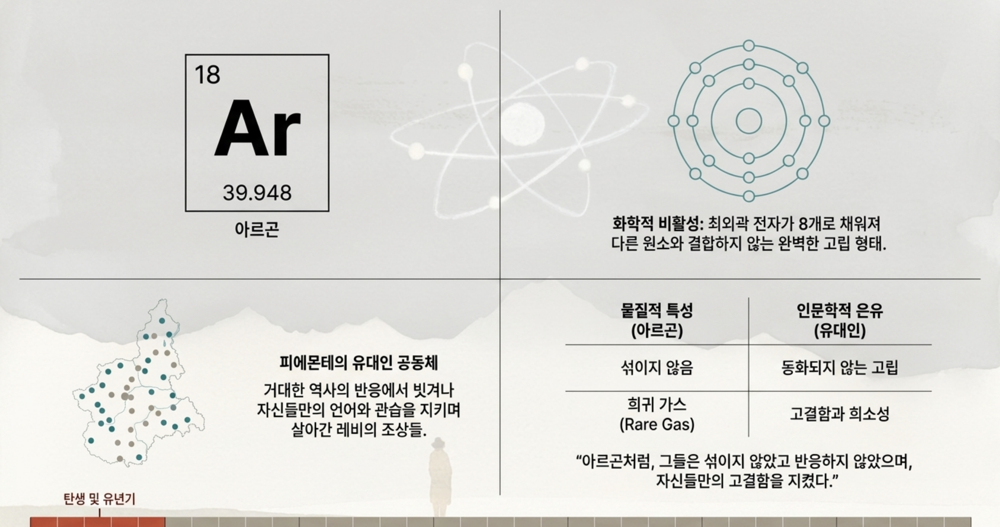

화학의 격자판 21개 원소를 선택해 보십시오
역사의 연대기 1919 ~ 1970년대
18
Noble Gas
Ar
아르곤
39.948
카드를 클릭하면 뒷면의 서사를 봅니다.
1장. 아르곤 (Argon)
~1930년대 (탄생 및 유년기)
피에몬테 지방의 유대인 공동체 조상들은 거대한 역사의 반응 속에서 비껴나 자신들만의 언어와 관습을 지키며 살았습니다. 그 정적이고 섞이지 않는 은둔적 삶은 우아하면서도 비활성 가스인 아르곤과 닮아 있습니다.
카드를 다시 클릭하면 앞면으로 돌아갑니다.
원소 비주얼 자료 Ar의 상세 화면
